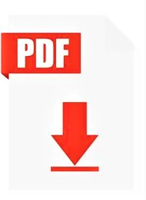

2019330491
JAQUELINE MATEO VARGAS
investigación 1 T.I Y S.I
mapa conceptual
Ejemplos de modelos de negocio
Reporte multimedia
Reporte multimedia 2
Caso de estudio Home Deepot
Caso de estudio TI
Cuadros comparativos sistemas empresariales
Investigación BMP
Investigación alineación de los servicios de tecnologias de la información
Misión, Visión, objetivos y glosario
Evaluación de los servicios de TI
CASO DE ESTUDIO 1 "LAS COMPUTADORAS USABLES VAN A TRABAJAR"
CASO DE ESTUDIO 2 "¿Es el momento de la computación en la nube?"
Linea del tiempo "Evaluación de la infraestructura de TI"
Mapa "TECNOLOGÍAS DE LA INFORMACIÓN
Reporte video 1 "Infraestructura TI en la empresa"
Reporte video 2 "INTRODUCCION_INFRAESTRUCTURA
Investigación CISC RISC
Investigación marco de referencia de TI
Caso de estudio ADSI
Caso de estudio PROYECTOS
Glosario y ejemplo de TI
Mapa conceptual ADMINISTRACION S.I
IMPLEMENTACION ITIL
APUNTES